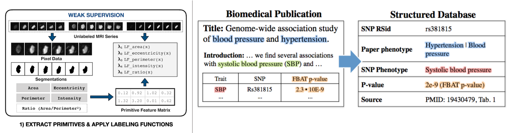
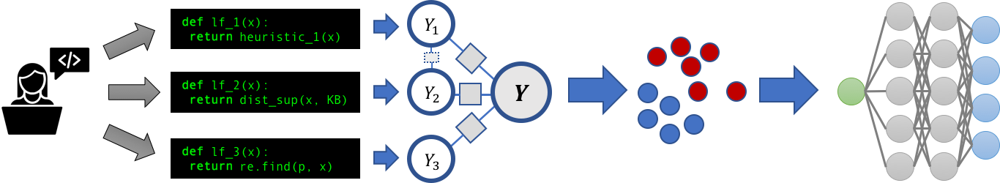
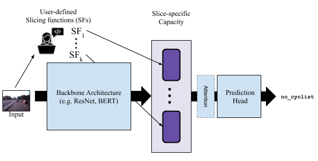

The System for Programmatically Building and Managing Training Data
Star Fork Recent TweetsSnorkel: The System for Programmatically Building and Managing Training Data
Snorkel is a system for programmatically building and managing training datasets to rapidly and flexibly fuel machine learning models.
Today's state-of-the-art machine learning models are more powerful and easy to use than ever before- however, they require massive training datasets. Traditionally, these training datasets require slow and often prohibitively expensive manual labeling by domain experts. Instead, in Snorkel, users write programmatic operations to label, transform, and structure training datasets for machine learning, without needing to hand label any training data; Snorkel then uses modern, theoretically-grounded modeling techniques to clean and integrate the resulting training data.
In a wide range of applications---from medical image monitoring to text information extraction to industrial deployments over web data---Snorkel provides a radically faster and more flexible to build machine learning applications, by letting users programmatically build and manipulate training data rather than label it by hand. Snorkel focuses on three key operations: labeling data, for example using heuristic rules or distant supervision techniques; transforming data, for example to perform data augmentation and express invariances in the data; and slicing data into different critical subsets.

Snorkel Users and Sponsors
Recent News
[6/4/19] Two papers using Snorkel (cardiac MRI imaging, GWAS studies) accepted to Nature Communications
[4/21/19] Two papers around learning weak supervision structure and augmentation theory accepted to ICML 2019
[3/14/19] SIGMOD paper and Google AI blog on Snorkel's usage at Google
[See References for more]
Snorkel Highlights
Snorkel has been used in production applications at places like Google, IBM, and Intel, and has recently been used to achieve state-of-the-art performance on the GLUE and SuperGLUE language understanding benchmarks!
Snorkel has been used extensively in medical settings, highlighted by two recent Nature Communication publications around automated GWAS curation and cardiac MRI classification, in various radiology and neurological monitoring settings where it has been used to replace person months of hand-labeling, and to extract information from electronic health record (EHR) data, offering a scalable solution for national medical device surveillance.
For more use cases, as well as the various academic publications explaining the technical work underlying Snorkel, see the References section below.
Snorkel in More Detail
Snorkel is a general framework that supports several weak supervision techniques and allows domain experts to encode their knowledge programmatically to provide supervision through the following operations:
Labeling
Rather than requiring users to label training data points by hand, Snorkel takes as input labeling functions (LFs), functions that heuristically or noisily label some subset of the training examples. Snorkel then models the quality and correlations of these LFs using novel, theoretically-grounded statistical modeling techniques. Read more here:
- Blog on using Labeling Functions to Efficiently Label Training Data
- NeurIPS'16 Paper on Data Programming
- VLDB'18 Paper on Snorkel for Rapidly Labeling Training Data
- AAAI'19 Paper on Core Labeling Function Modeling Method and Theory
Tranforming

Snorkel also lets users write transformation functions (TFs) to heuristically generate new, modified training examples by transforming existing ones---a strategy often referred to as data augmentation. Rather than requiring users to tune these data augmentation or transformation strategies by hand, Snorkel learns compositions of transformations across various domain-specific tasks to optimize for a representative training set. Read more here:
- Blog on using Transformation Functions to Augment Training Set
- NeurIPS'17 Paper on Learning Data Augmentation Policies
- ICML'19 Paper on Theory of Data Augmentation
- Follow Up Work: Google's AutoAugment to Learn Augmentation Policies
Slicing
Finally, Snorkel also lets users write slicing functions (SFs) to heuristically identify subsets of the data the model should particularly care about, e.g. have extra representative capacity for, due to their difficulty and/or importance. It models slices in the style of multi-task learning and an attention-mechanism is then learned over these heads. Read more here:
Snorkel can also operate over other forms of weak supervision like crowdsourcing by modeling individual workers as labeling functions. To properly take advantage of all supervision signal available, Snorkel can takes advantage of multi-task learning and transfer learning, moving towards massive multi-task learning to facilitate incorporating diverse and varying granularities of supervision at a large scale.
References
Blogs and Tutorials
- [3/23/2019] Massive Multi-Task Learning with Snorkel MeTaL: Bringing More Supervision to Bear
- [2/4/2019] Emerging Topics in Multi-Task Learning Systems
- [12/4/2018] Software 2.0 and the Paradigm Shift in Programming ML Systems
- [06/21/2018] Systematically Debugging Training Data for Software 2.0
- [11/30/2017] Weak Supervision: The New Programming Language for Software 2.0
- [09/20/2017] Exploiting Building Blocks of Data to Efficiently Create Training Sets
- [08/10/2017] Learning to Compose Domain-Specific Transformations for Data Augmentation [Repo]
- [07/12/2017] Weak Supervision: The New Programming Paradigm for Machine Learning
- [06/05/2017] Scaling Up Snorkel with Spark [Tutorial]
- [05/08/2017] HoloClean: Weakly Supervised Data Repairing
- [04/17/2017] Structure Learning: Are Your Sources Only Telling You What You Want to Hear? [Tutorial]
- [03/21/2017] Babble Labble: Learning from Natural Language Explanations
- [03/16/2017] Fonduer: Knowledge Base Construction from Richly Formatted Data
- [12/15/2016] Data Programming + TensorFlow Tutorial (notebook version)
- [11/24/2016] SLiMFast: Assessing the Reliability of Data
- [10/24/2016] Socratic Learning: Debugging ML Models
- [9/19/2016] Data Programming: ML with Weak Supervision [Tutorial]
Papers and Pre-Prints
- Snorkel: Rapid Training Data Creation with Weak Supervision (VLDB 2018)
- Data Programming: Creating Large Training Sets, Quickly (NeurIPS 2016)
- Snorkel and the Software 2.0 vision (KDD 2018) Learning the Structure of Generative Models without Labeled Data (ICML 2017)
- Learning Dependency Structures for Weak Supervision Models (Arxiv 2019)
- Training Complex Models with Multi-Task Weak Supervision (AAAI 2019)
- The Role of Massively Multi-Task and Weak Supervision in Software 2.0 (CIDR 2019)
- Snorkel: Fast Training Set Generation for Information Extraction (SIGMOD DEMO 2017)
- Inferring Generative Model Structure with Static Analysis (NeurIPS 2017)
- Training Classifiers with Natural Language Explanations (ACL 2018)
- Data Programming with DDLite: Putting Humans in a Different Part of the Loop (HILDA @ SIGMOD 2016; note Snorkel was previously DDLite)
- Socratic Learning: Correcting Misspecified Generative Models using Discriminative Models
- Fonduer: Knowledge Base Construction from Richly Formatted Data (SIGMOD 2018)
- Learning to Compose Domain-Specific Transformations for Data Augmentation (NeurIPS 2017)
- Gaussian Quadrature for Kernel Features (NeurIPS 2017)
Snorkel Use Cases
- Conversational agents at IBM: Bootstrapping Conversational Agents With Weak Supervision (AAAI 2019)
- Web content & event classification at Google: Snorkel DryBell: A Case Study in Deploying Weak Supervision at Industrial Scale (SIGMOD Industry 2019), and Google AI blog post
- Business intelligence at Intel: Osprey: Non-Programmer Weak Supervision of Imbalanced Extraction Problems (SIGMOD DEEM 2019)
- Anti-semitic tweet classification w/ Snorkel + transfer learning: A Technique for Building NLP Classifiers Efficiently with Transfer Learning and Weak Supervision (Blog post 2019)
- Clinical text classification: A clinical text classification paradigm using weak supervision and deep representation (BMC MIDM 2019)
- Social media text mining: Deep Text Mining of Instagram Data without Strong Supervision (ICWI 2018)
- Cardiac MRI classification with Stanford Medicine: Weakly supervised classification of rare aortic valve malformations using unlabeled cardiac MRI sequences (BioArxiv 2018)
- Catching cheating at Chegg (Article)
- Medical image triaging at Stanford Radiology: Cross-Modal Data Programming for Medical Images (NeurIPS ML4H 2017)
- GWAS KBC with Stanford Genomics: A Machine-Compiled Database of Genome-Wide Association Studies (NeurIPS ML4H 2016)